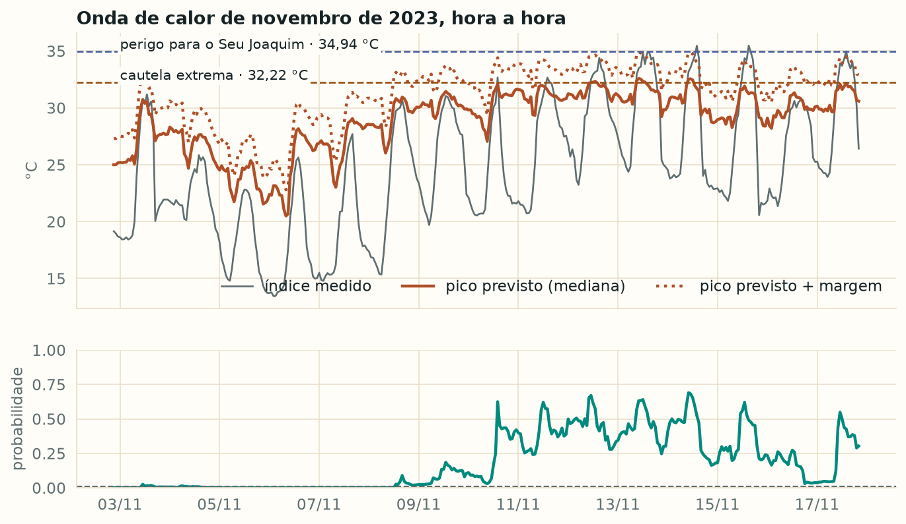
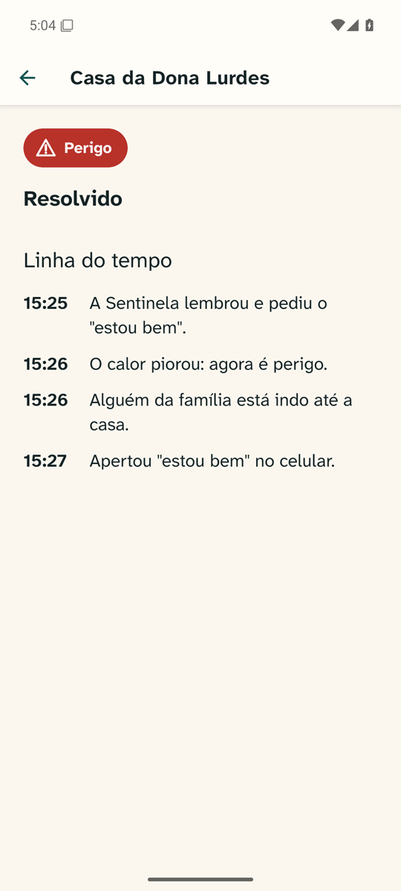
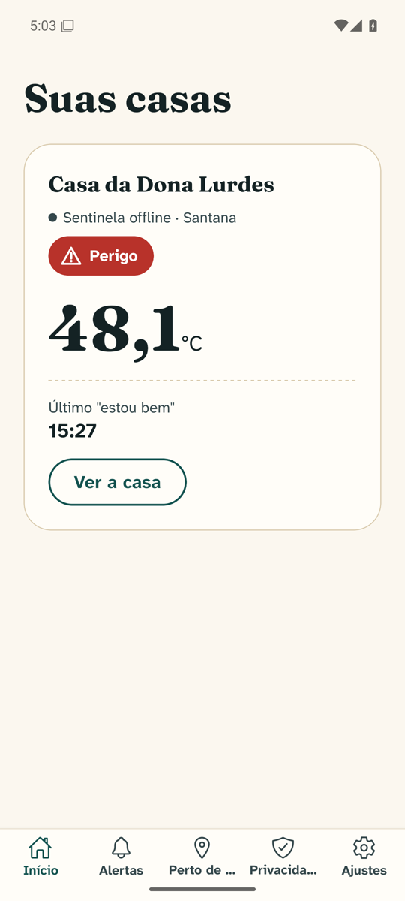
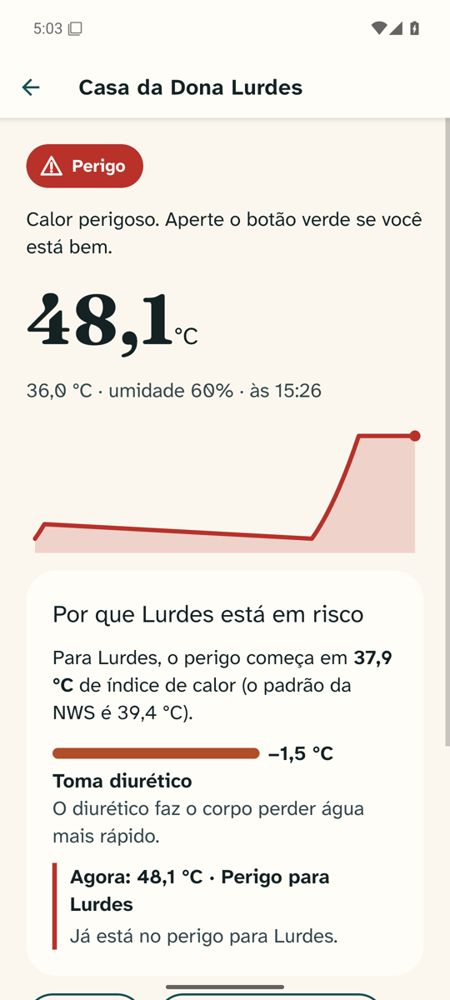
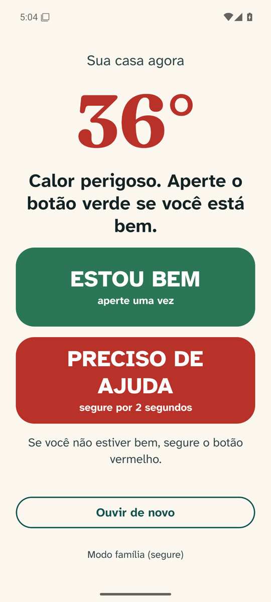

Na casa · Physical Computing
A Sentinela
01
ESP32 com DHT22
mede o calor de dentro da casa
02
Índice de calor no aparelho
a mesma tabela do Core e do ML
03
Luz fixa, que nunca pisca
o pedido da entrevista
04
Dois botões grandes
"estou bem" e "preciso de ajuda"
simulação real no Wokwi
IA & ML · 16 anos de dados reais do INMET
Prever antes
XGBoost
próximas 24 h
ONNX
0
de 75
dias de calor forte avisados com até 24 h de antecedência, no teste de 2022 a 2025

Replay da onda de calor de novembro de 2023, hora a hora
Quando o perigo chega
ESTOU BEM
Degrau 1
Um lembrete para ela
na Sentinela e no Modo Idoso
Degrau 2
A família
pelo app, com "ligar agora"
Degrau 3
Quem está perto
a vizinha, a rede de cuidado
alarme de verdade, só em perigo

A linha do tempo do alerta
A rede de cuidado · Mobile

A filha, ao vivo

O calor de agora e o prazo

Modo Idoso
Sombra
GS 2026.2 · CitizenTech